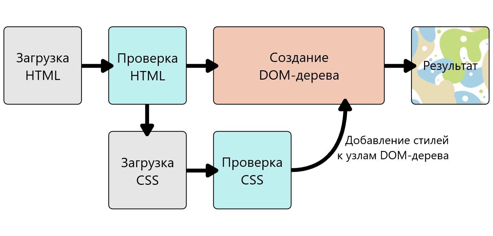

Как работает CSS
Мы уже изучили основы CSS, для чего он нужен и как создавать простые таблицы стилей. В этом уроке мы посмотрим, как браузер обрабатывает CSS и HTML и выводит содержимое на веб-страницу.
Как работает CSS?
Когда браузер отображает документ, он должен совместить его содержимое с его стилями. Этот процесс идёт в несколько этапов, о которых мы сейчас поговорим. Держите в уме, что это очень упрощённая версия того как браузер действительно загружает веб-страницу, а также то, что разные браузеры делают это по разному. Но, происходит, грубо говоря, следующее:
- Браузер получает HTML-страницу (например, из Интернета)
- Преобразует HTML в DOM (Document Object Model). DOM (или DOM-дерево) - это представление страницы в памяти компьютера. Подробнее на DOM мы остановимся чуть позже.
- Затем браузер забирает все ресурсы и описания, связанные с HTML-документом, например: встроенные картинки, видео ... и стили CSS! JavaScript присоединяется чуть позже и мы пока не будем говорить об этом, чтобы все не усложнять.
- После этого браузер анализирует полученный CSS код, сортирует описанные там правила в зависимости от их селекторов и раскладывает их в различные «корзины»: элементы, классы, идентификаторы(ID) и т.п. Основываясь на найденных селекторах браузер понимает какие правила относятся к определённым «узлам» в DOM-дереве и применяет их по мере необходимости (этот промежуточный шаг называют «формированием дерева представления» или «формированием дерева рендеринга»)
- Дерево представления (render tree) формируется в том порядке, в каком оно затем должно будет отображаться, когда все правила будут применены.
- Затем происходит визуальное отображение контента на странице (этот этап называется «отрисовкой»)
Диаграмма демонстрирует этот процесс.
